Due Friday, February 4 at 10:30 am
- Submissions received by the due date receive a small on-time bonus.
- All students are granted a pre-approved extension or "grace period" of 24 hours after the due date. Late submissions are accepted during the grace period with no penalty.
- The grace period expires Sat, Feb 5 at 10:30 am, after which we cannot accept further late submissions.
- All due dates and submission times are expressed in Pacific time.
You are permitted to work on this assignment in pairs.
Recursion is a powerful problem-solving tool with tons of practical applications. This assignment centers on two real-world recursion problems, each of which we think is interesting in its own right. By the time you’re done with this assignment, we think you’ll have a much deeper appreciation both for recursive problem solving and for what sorts of areas you can apply your newfound skills to.
There are three problems in this assignment. The first one is a warmup, and the next two are the main coding exercises.
- Debugging Practice: The debugger is a powerful tool for helping understand what a program is doing. Learning how to harness it is important to developing as a programmer.
- Matchmaker: We need to partner people up. What's the best way to do so?
- Disaster Planning: Cities need to plan for natural disasters. Emergency supplies are expensive. What’s the cheapest way to prepare for an emergency?
You have plenty of time to work on this assignment if you make slow and steady progress. Here's our recommended timetable:
- Aim to complete the debugging exercises within one day of this assignment going out.
- Aim to complete Matchmaker within four days of this assignment going out.
- Aim to complete Disaster Planning within seven days of this assignment going out.
You are encouraged to work in pairs on this assignment. Just don’t work in pairs by splitting the assignment in half. 😃
Assignment Logistics
Starter Files
We provide a ZIP of the starter project. Download the zip, extract the files, and double-click the .pro file to open the project in Qt Creator.
Resources
Feel free to check out our Python-to-C++ guide if you're moving from Python to C++. Also, check out our style guide, guide to testing, and debugging guide.
Getting Help
Keep an eye on the Ed forum for an announcement of the Assignment 4 YEAH (YEAH = Your Early Assignment Help) group session where our veteran section leaders will answer your questions and share pro tips. We know it can be daunting to sit down and break the barrier of starting on a substantial programming assignment – come to YEAH for advice and confidence to get you on your way!
We also here to help if you get run into issues along the way! The Ed forum is open 24/7 for general discussion about the assignment, lecture topics, the C++ language, using Qt, and more. Always start by searching first to see if your question has already been asked and answered before making a new post.
To troubleshoot a problem with your specific code, your best bet is to bring it to the LaIR helper hours or office hours.
Part One: Debugging Practice
When you encounter a bug in a program, your immediate instinct is probably to say something like
"Why isn't my program doing what I want it to do?"
One of the best ways to answer that question is to instead answer this other one:
"What is my program doing, and why is that different than what I intended?"
The debugger is powerful tool for answering questions like these. You explored the debugger in Assignment 0 (when you learned how to set breakpoints and use Step In, Step Over, and Step Out) and in Assignment 1 (when you learned how to walk up and down the call stack). This part of the assignment is designed to refresh your skills in those areas and to give you practice working the debugger in more elaborate recursive problems.
Milestone 1: Explore the Towers of Hanoi
The Towers of Hanoi problem is a classic puzzle that has a beautiful recursive solution. If you haven’t yet done so, take a few minutes to read Chapter 8.1 of the textbook, which explores this problem in depth.
We’ve provided you with a TowersOfHanoi.cpp file, which includes a correct, working solution to the Towers of Hanoi problem. Take a minute to run the “Towers of Hanoi” demo from the main program. Choose the “Go!” button to begin the animation, and marvel at how that tiny recursive function is capable of doing so much. Isn’t that amazing?
With that said, let’s dive into the meat of what you’ll be doing. We’re going to ask you to use the debugger and its features to get a better sense for how the code works.
Open the TowersOfHanoi.cpp file, then set a breakpoint on the first line of the solveTowersOfHanoi function. Run the program in debug mode, choose the “Towers of Hanoi” option from the menu at the top of the program, but don’t click the “Go!” button yet. When the debugger engages, it halts execution of the running program so that you can inspect what’s going on. This means that the graphics window might not be operational – you might find that you can’t drag it around, or resize it, or move it, etc. Therefore, we recommend that before you hit the “Go!” button to bring up the debugger, you resize the demo app window and the Qt Creator window so that they’re both fully visible.
Once you’re ready, hit the “Go!” button. This will trigger the breakpoint. You’ll see a yellow arrow pointing at the line containing the breakpoint, and the local variables window will have popped up.
First, investigate the pane in the debugger that shows local variables and their values. Because totalMoves has not yet been initialized, its value is unspecified; it might be 0, or it might be a random garbage value. The function’s parameters, though, should be clearly visible at this point.
You should now be able to answer the following questions. To do so, edit the file DebuggingAnswers.txt with your answers:
Question 1
What are the values of all the parameters to the solveTowersOfHanoi function?
Question 2
Some function in our starter code called solveTowersOfHanoi. What file was that function defined in, and what was the name of that function? (Hint: use the call stack!)
Once you’ve answered these questions, go back to the TowersOfHanoi.cpp file, and make sure you see a yellow arrow pointing at the line containing your breakpoint. Let’s now single-step through the program. Use the “Step Over” button to advance past the call to the function initHanoiDisplay, which configures the graphics window. If you’ve done this correctly, you should see the disks and spindles.
Now, keeping clicking “Step Over” to advance through the other lines in the function. When you step over the line containing the call to moveTower, you should see the disks move to solve the Towers of Hanoi. Doesn’t get old, does it? 😃
You should now be ready to answer the following question in DebuggingAnswers.txt.
Question 3
How many total moves were required to solve this instance of Towers of Hanoi?
At this point, hit the “Continue” button to let the program keep running as usual. Click the “Go!” button again to trigger your breakpoint a second time.
This time, instead of using Step Over, we’re going to use Step Into. Rather than stepping over function calls, Step Into goes inside the function being called so you can step through each of its statements. (If the current line is not a function call, Step Into and Step Over do the same thing.)
Use Step Into to enter the call to initHanoiDisplay. The editor pane will switch to show the contents of the src/Demos/TowersOfHanoiGUI.cpp file and the yellow arrow will point to the first line of the initHanoiDisplay function. This code is unfamiliar, you didn't write it, and you didn't intend to start tracing it. Step Out is your escape hatch. This “giant step” executes the rest of the current function up to where it returns. Use Step Out to return to solveTowersOfHanoi.
The next line of code in solveTowersOfHanoi is the pause function, another library function you don't want to trace through. You could step in and back out, but it's simpler to just Step Over.
You are interested in tracing through the moveTower function, so use Step Into to go inside. Once inside, single-step through the code until the program is just about to execute the first recursive call to moveTower. Now, press Step Over to execute it. The GUI window will show the left tower, except for the bottom disc, moving from the left peg to the middle peg, leaving the bottom disk uncovered. This should also cause the value of totalMoves to count all moves made by that recursive call.
Now, answer the following question:
Question 4
What is the value of the totalMoves variable inside the first moveTower call after stepping over its first recursive sub-call? (In other words, just after stepping over the first recursive sub-call to moveTower inside the if statement in the recursive function.)
The next Step Over moves the bottom disk. The final Step Over moves the smaller tower on top. Use Continue to resume normal execution and finish the demo.
Press the “Go!” button a third time. This time, do your own tracing and exploration to solidify your understanding of recursion and its mechanics. Watch the animated disks and consider how this relates to the sequence of recursive calls. Observe how stack frames are added and removed from the debugger call stack. Select different levels on the call stack to see the value of the parameters and the nesting of recursive calls. Here are some suggestions for how stepping can help:
- Stepping over a recursive call can be helpful when thinking holistically. A recursive call is simply a “magic” black box that completely handles the smaller subproblem.
- Stepping into a recursive call allows you to trace the nitty-gritty details of moving from an outer recursive call to the inner call.
- Stepping out of a recursive call allows you to follow along with the action when backtracking from an inner recursive call to the outer one.
Milestone 2: Debug a Broken Permutations Function
Your next task is to use the debugger to do what it’s designed for – to debug a program!
In Permutations.cpp, we have provided you an incorrect implementation of a function to generate permutations recursively. The permutationsRec function contains a small but significant error. It’s not that far from working correctly – in fact, there is a one-character mistake in that function – but what difference a single character can make! Your task is to use the debugger to figure out the following:
- What is the one-character mistake in the program?
- With the one-character mistake in the program, what does the program actually do? And why is that not what we want it to do?
Choose “Permutations” from the top menu and you’ll be able to type in strings, call the broken permutationsOf function, and see the output that’s produced. Try various inputs and observe the difference between what’s produced and what’s supposed to be produced. (How can you see what’s supposed to happen? You could always run the lecture code from Monday when we wrote a correct recursive permutations function!) It can be difficult to tease out the impact of the bug when you are tracing through a deep sequence of recursive calls. Try a variety of simple inputs to find the smallest possible input for which you can observe an error and use that as your test case. Specifically, you’re aiming to find an input where
- the output produced is wrong, and
- no shorter input produces the wrong answer.
Using your minimized test case, trace the operation of permutationsRec to observe what’s going on internally. Diagram the decision tree that is being traversed and match the tree to what you see in the debugger as you step in/out/over. Select different stack frames in the call stack to see the state being maintained in each of the outer frames.
Eventually, you should find the bug. Once you have, answer the following questions by editing the DebuggingAnswers.txt file.
Question 5
What is the smallest possible input that triggers the bug?
Question 6
What is the one-character error in the program?
Question 7
Explain why that one-character bug causes the function to return the exact output you see when you feed in the input you provided in Q5. You should be able to specifically account for where things go wrong and how the place where the error occurs causes the result to change from “completely correct” to “terribly wrong.”
As a hint on this problem: you might have noticed that we didn’t pass the parameters in by const reference. If you’ve tried hunting the bug for fifteen minutes and haven’t found it yet, try changing the parameters to use pass-by-const-reference and see if you notice anything. That might help you find the bug, but to understand the bug you’ll need to do some more exploration in the debugger.
We’ve asked you to answer these questions because this sort of bug-hunting is useful for understanding recursive functions and what makes them break. In particular, keep the following in mind:
- When trying to debug a recursive function, look for the simplest case where the recursion gives the wrong answer. Having a small test case makes it easy to reproduce the error and to trace through what’s happening in the debugger.
- Using Step In, Step Over, and Step Out, it’s possible to watch recursion work at different levels of detail. Step In lets you see what’s going on at each point in time. Step Over lets you see what a recursive function does in its entirety. Step Out lets you run the current stack frame to completion to see how the code behaves as a whole.
Part Two: Matchmaker
Background: Perfect Matchings
You have a group of people all taking the same small class. That class lets people work in pairs on the assignments, and folks are interested in finding someone to work with. After everyone chats with each other, they each make a list of the people they’d be comfortable working with. The question then arises – given everyone’s preferences, is it possible to pair everyone off so that they’re partnered with someone they want to work with?
We can visualize this problem by drawing a circle for each person, then drawing lines connecting pairs of people who would be comfortable working with one another. Here’s an example of what that might look like:
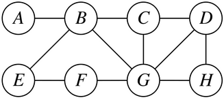
For example, in the above diagram, person B could potentially partner with people A, C, E, and G; person A could only partner with person B; and person D could partner with any of people C, G, or H. We can encode this diagram as a Map<string, Set<string>>, where each key in the map represents a person and each value represents the set of people they could potentially partner with. For example, the above diagram would be encoded as follows:
"A": { "B" },
"B": { "A", "C", "E", "G" },
"C": { "B", "D", "G" },
"D": { "C", "G", "H" },
"E": { "B", "F" },
"F": { "E", "G" },
"G": { "B", "C", "D", "F", "H" },
"H": { "D", "G" }
Now that we see which pairs of people could potentially be paired up, we need to decide which people we will actually partner together. There are many ways we could do this. For example, consider this first possible option:
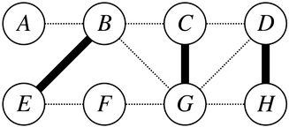
In this matching, we've paired B with E, paired C with G, and paired D with H. That leaves A and F without a partner.
Here's another option:
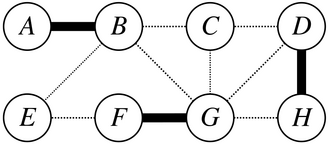
We've paired A and B, paired F with G, and paired D with H. This leaves E and C alone.
Now, consider this option:
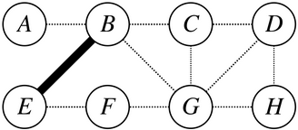
This is the (not very good) option of just pairing off B and E, leaving people A, C, D, F, G, and H unpaired.
However, we can do better than all three of the above options. Here's a better matching:
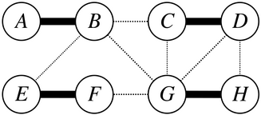
Here, we pair A with B, pair C with D, pair E with F, and pair G with H. This forms partners out of people who want to work together and does so in a way that matches everyone with a partner. Such an arrangement is called a perfect matching.
More generally, a perfect matching is a way to pair people off so that
- each person is assigned a partner,
- no person is assigned two or more partners, and
- each partner pair corresponds to one of the original potential pairings.
In some scenarios, like the one shown above, it’s possible to find a perfect matching. However, depending on who wants to work with one another, it’s not always possible to find perfect matchings. Below are several examples of groups of people with no perfect matching. Take a minute to convince yourself why a perfect matching isn’t possible in each case.
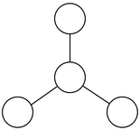
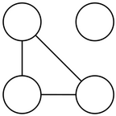
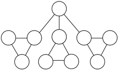
Milestone One: Find Perfect Matchings
Your first task is to write a function
bool hasPerfectMatching(const Map<string, Set<string>>& possibleLinks,
Set<Pair>& matching);
that takes as input a group of people and the possible links between them, then determines whether a perfect matching exists. If one does, the function should return true and set the matching outparameter to hold one such perfect matching. If one doesn’t, the function should return false, and the contents of matching can be whatever you want them to be.
The Pair type represents a pair of strings, where the order of the strings doesn’t matter. (More specifically, Pair always stores the strings in alphabetical order.) You can use it like this:
Pair greek1("Castor", "Pollux"); // Create a pair.
Pair greek2("Pollux", "Castor"); // Same pair; order doesn't matter.
if (greek1 == greek2) {
// true; elements are the same even though in a different order
}
cout << greek1.first() << ", "
<< greek1.second() << endl; // Prints Castor, Pollux
As a hint for this problem, at each point in time, you’ll find either that everyone is paired off, or that there’s someone who isn’t paired. In the first case, great! You’re done, and you have a perfect matching. In the second case, pick some person who isn’t yet paired off, then try all possible ways of pairing them off with an unpaired person.
Before you start writing any code for this one, you should add a custom test case of your own to make sure you’re comfortable with the statement of the problem. There are lots of cases we didn’t check for – see if you can find one that’s relatively simple.
With that in mind, here’s your first milestone:
Milestone One Requirements
-
Add at least one
STUDENT_TESTforhasPerfectMatchingtoMatchmaker.cpp. This is a great way to confirm that you understand what the function you’ll be writing is supposed to do. -
Implement the
hasPerfectMatchingfunction inMatchmaker.cpp.
Some notes and hints on this problem:
-
The links in
possibleLinksare symmetric: if person A is a possible match for person B, then person B is also a possible match for person A. You can assume we’ll never call this function on an input where that isn’t the case. -
No person will ever have a possible link to themselves. Each link really does represent a pair of people.
-
It’s possible that there’s a person in
possibleLinkswho isn’t linked to anyone, meaning that they aren’t comfortable working with anyone. In that case, there’s no perfect matching. -
You may find it easier to solve this problem first by simply getting the return value right, completely ignoring the
matchingoutparameter. Once you’re sure that your code is always producing the right answer, update it so that you actually fill inmatching. Doing so shouldn’t require too much code, and it’s way easier to add this in at the end than it is to debug the whole thing all at once. -
You can assume that
matchingis empty when the function is called. -
If your function returns
false, the final contents ofmatchingdon’t matter, though we suspect your code will probably leave it blank. -
If you need to grab a key out of a
Mapand don’t care which key you get, use the functionmap.firstKey(). To grab a key out of aSet, useset.first(). (Which of these functions, if any, you use in this function are up to you.) -
Although the parameters to this function are passed by
constreference, you’re free to make extra copies of the arguments or to set up whatever auxiliary data structures you’d like. If you find you’re “fighting” your code – an operation that seems simple is taking a lot of lines – it might mean that you need to change your data structures. -
You might be tempted to solve this problem by repeatedly taking a person with the most possible partners and then assigning them a partner, or taking the person with the fewest possible partners and picking a partner for them, or something like this. Solutions like these are called greedy algorithms, and while greedy algorithms do work well for some problems, this problem is not one of them. To the best of our knowledge, there is no known greedy algorithm for this problem.
-
The very last of the provided tests is a “stress test” designed to check that your algorithmic strategy avoids unnecessary work. Specifically, this test is designed to check whether your code repeatedly generates the same matchings multiple times, or spends time exploring matchings that couldn’t possibly work (say, matchings where a person was intentionally never assigned a partner). If this test never finishes running, or it finishes running only after a very long time, it may mean that the strategy you’ve picked for this problem is intrinsically inefficient. If you run into this, take a look over your code. Make sure each matching you generate is generated exactly once and that you don’t, say, try assigning the same pair of people to each other multiple times.
Background: Maximum-Weight Matchings
Perfect matchings are one way to assign partners, but there’s not the only or best way to do so. Indeed, there are two major shortcomings of this approach.
-
If a particular combination of students has a perfect matching, then we can always assign partners to everyone. But there are many cases where this isn’t possible. A simple case would be if there’s an odd number of students, in which case someone necessarily won’t get a partner.
-
Up to this point, we’ve been assuming that each pair of people either could be partners, or could not be partners. However, reality is messier than this. There might be a person who could be okay partners with one person, so-so partners with a second, but excellent partners with a third. In that case, we may want to prioritize matching with the third person, since that would be better than the other two options.
To account for this, we’ll make some changes to our model. As before, we’ll have everyone list people they may want to work with. Unlike before, though, each one of those possible pairs will have an associated weight representing how good a match they would be. Larger weights correspond to better matches, and smaller weights correspond to worse matches. In the extreme case, a weight of zero means “these two people are equally happy working together and not working together,” and negative weights mean “these two people would actively dislike being paired.” That might give us a picture like this one here:
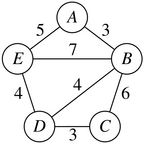
For example, the value of partnering up person A and person B is 3, but the value of partnering up person A and person E is 5. That means that A would rather work with E than with B, but is still open to working with B if that ends up being better for the group. Notice, though, that person A does not want to work with person C or person D, as evidenced by the lack of lines connecting A to C or A to D.
There’s no way to find a perfect matching in this graph – there’s an odd number of people here, so someone has to be left out. However, we can try to find matchings that have a large total weight, corresponding to finding better-quality matches between people. For example, here's one option:

Here, we pair off A with B and pair C with D for a total weight of 6. This leaves E unpaired. However, there's a higher-weight matching than this one:
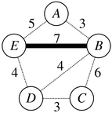
Notice that we've just paired off B and E for a total weight of 7, leaving the other three people unpaired. However, apparently B and E so strongly desire working together that this is a higher-weight matching than the one above! But it's not the highest-weight matching possible. Here's a better one:
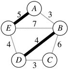
This pairs up A with E and pairs B with D, leaving C unpaired. Even though each of those matches is individually worse than the match between B and E, the total weight of this matching is 9. And yet even this matching can be bested! Below is the highest-weight matching possible here:
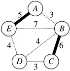
This pairs off A with E and B with C for a total weight of 11. This is the highest weight of any matching here, and so it's called a maximum-weight matching.
Notice that a maximum-weight matching might not always be a perfect matching. In the above case, there is no perfect matching possible because there's an odd number of people. But even in cases where perfect matchings do exist, the maximum-weight matching might not be perfect. For example, here’s a simple case where there’s a perfect matching (pair A with B and pair C with D for a total weight of 2) that isn’t the maximum-weight matching (which would be to pair B with C for a total weight of 3, leaving A and D unpartnered).
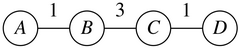
This is a potential downside to this approach, though in many cases the benefits of assigning better partnerships outweighs this drawback. Keep that in mind as you're working through this assignment.
Milestone Two: Find Maximum-Weight Matchings
Your next task is to implement a function
Set<Pair> maximumWeightMatching(const Map<string, Map<string, int>>& possibleLinks);
that takes as input a weighted preference graph, then returns a matching in that graph with the maximum possible weight.
The parameter to this function is a Map<string, Map<string, int>>, which might raise some eyebrows. Fortunately, it has a nice interpretation. Each key is a person in the group. The associated value is Map from other people in the group to the weight of the link to that person. As an example, here’s one sample group of people, along with the associated map.
"A": { "B": 3,
"E": 5 },
"B": { "A": 3,
"C": 6,
"D", 4,
"E", 7 },
"C": { "B": 6,
"D", 3 },
"D": { "B": 4,
"C", 3,
"D", 4 },
"E": { "A": 5,
"B", 7,
"D", 4 }
If the above map is called possibleLinks, then, for example, possibleLinks["A"]["E"] gives the weight of the potential link between A and E (here, 5), and possibleLinks["B"]["D"] gives the weight of the potential link between B and D.
To repeat an important point from above – a maximum weighted matching might not necessarily be a perfect matching. This means that your code must allow for the case where a particular person is not matched with anyone else.
As before, you should write at least one custom test case (a STUDENT_TEST) for this problem before you start writing any code. This is a great way to confirm that you understand what’s being asked of you prior to working on the backtracking logic.
With that said, here’s what you need to do:
Milestone Two Requirements
- Add at least one
STUDENT_TESTformaximumWeightMatchingtoMatchmaker.cpp. This is a great way to confirm that you understand what the function you’ll be writing is supposed to do. - Implement the
maximumWeightMatchingfunction inMatchmaker.cpp. - Test your code thoroughly. Once you’re confident that it works – and no sooner – pull up our bundled demo application and see what sorts of matchings your code can find! Double-click in blank space to create a new person, and add links between people by hovering over a person, clicking in the blue ring around them, and dragging to the person they can pair with.
Some notes and hints on this problem:
-
This problem has some similarities to determining whether a perfect matching exists. However, in many ways, it's quite a different problem. Previously, you just needed to see whether there was any way to pair everyone off. Now, you need to look across all possible ways of pairing people off and figure out which is the best. Previously, everyone necessarily had to be paired off. Now, the best solution might leave people unpaired. As a result, we do not recommend copying your code for finding perfect matchings and making edits to it. This problem is sufficiently different that we advise rewriting the code from scratch.
-
If there are multiple matches tied for the maximum weight, you can return any of them.
-
The links in
possibleLinksare symmetric: if person A is a possible match for person B, then person B is also a possible match for person A. Moreover, the weights of the match will be the same regardless of whether you look for the weight between A and B or the weight between B and A. You can assume we’ll never call this function on an input where that isn’t the case. -
No person will ever have a possible link to themselves. Each link really does represent a pair of people.
-
Watch out for map autoinsertion. If you try to read a weight from
possibleLinksbetween two people who aren't linked, you'll see a weight of 0 even though no such link exists. However, there may, independently, be existing links between people of weight 0. -
It’s possible that there’s a person in
possibleLinkswho isn’t linked to anyone, meaning that they aren’t comfortable working with anyone. -
It’s possible that there are negative weights in the
possibleLinksmap, indicating two people that would be actively unhappy to be matched with one another. No maximum-weight matching will ever use a negative-weight edge. Depending on how you approach this problem, you may find that you need to add code to account for this case, or you may not. -
It’s also possible to have a weight of zero, indicating that two people are essentially indifferent about being matched with one another versus not being matched with one another. You may include these edges in your resulting matching, but you aren’t required to do so, since they don’t change the overall weight of the match.
-
If you need to grab a key out of a
Mapand don’t care which key you get, use the functionmap.firstKey(). To grab a key out of aSet, useset.first(). As before, you may or may not need to use these functions depending on how your solution works. -
Although the parameters to this function are passed by
constreference, you’re free to make extra copies of the arguments or to set up whatever auxiliary data structures you’d like. If you find you’re “fighting” your code – an operation that seems simple is taking a lot of lines – it might mean that you need to change your data structures. -
You might be tempted to solve this problem by repeatedly taking a person with the most possible partners and then assigning them a partner, or taking the person with the fewest possible partners and picking a partner for them, or choosing the highest-weight link and including it, or something like this. Solutions like these are called greedy algorithms, and while greedy algorithms do work well for some problems, this problem is not one of them. To the best of our knowledge, there is no known greedy algorithm for this problem.
-
The very last of the provided tests is a “stress test” designed to check that your algorithmic strategy avoids unnecessary work. Specifically, this test is designed to check whether your code repeatedly generates the same matchings multiple times, or spends time exploring matchings that couldn’t possibly work (say, “matchings” where a person was assigned multiple partners). If this test never finishes running, or it finishes running only after a very long time, it may mean that the strategy you’ve picked for this problem is intrinsically inefficient. If you run into this, take a look over your code. Make sure each matching you generate is generated exactly once and that you don’t, say, try assigning the same pair of people to each other multiple times.
Milestone Three: Explore and Evaluate
In a sense, a perfect matching and a maximum-weight matching can both be thought of as "the best possible matching" given different priorities and values. If you consider "the best possible matching" to be one where the most people are paired off, then a perfect matching is "the best possible matching" because no other matching can pair more people. If you consider "the best possible matching" to be one where total quality of the matches is maximized, then a maximum-weight matching is "the best possible matching" because no other matching can produce a higher total quality across all the matches. The fact that each of these types of matching can claim to be "the best possible" given different criteria means that each may be useful in different situations when different values are implicated.
Answer the following questions in ShortAnswers.txt.
Q1. Give a concrete, real-world scenario in which you believe it's better to assign matches using a perfect matching than by finding a maximum-weight matching (assuming that a perfect matching exists). In writing your answer, explain why, in your particular scenario, you believe it is preferable to maximize the total number of matches made rather than the quality of those matches. (Your answer should be 2 - 4 sentences in length.)
Q2. Give a concrete, real-world scenario in which you believe it's better to assign matches using a maximum-weight matching than by finding a perfect matching (assuming that a perfect matching exists). In writing your answer, explain why, in your particular scenario, you believe it is preferable to maximize the quality of the matching than it is to maximize the total number of matches made. (Your answer should be 2 - 4 sentences in length.)
Let's now turn to an important nuance that's built into the underlying assumptions of maximum-weight matchings. In a max-weight matching, each weight represents the "goodness" of a match. In doing so, we've quietly made some additional assumptions:
- Weights, and therefore the "goodnesses" of a match, can be meaningfully added together.
- Two matchings with equal weight have equal "goodness."
- If one matching has higher weight than another, it is a "better" match.
It's reasonable to debate whether these assumptions hold in practice. For example, consider the following two matchings, each of which are for the same group of people with the same preferences:
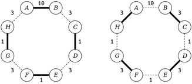
The matching to the left is a maximum-weight matching with a total weight of 13. People A and B each get an incredibly good match, while the remaining six people each get matchings that aren't their preferred matching. On the right is a matching that isn't a maximum-weight matching (it has weight 12), but more people get their preferred matching. More abstractly, on the left a single pair of people get the match of their dreams while everyone else ends up only modestly happy, while on the right everyone gets a match that's decent, while one pair of star-crossed partners fail to realize their potential.
Answer the following question in ShortAnswers.txt.
Q3. Give a concrete, real-world scenario in which you believe it's better to find a matching with a higher total weight at the expense of a less even distribution of match weights. Justify your answer. (Your answer should be 2 - 4 sentences in length.)
Q4. Give a concrete, real-world scenario in which you believe it's better to find a more even distribution of match weights at the expense of a lower total match weight. Justify your answer. (Your answer should be 2 - 4 sentences in length.)
Part Three: Disaster Planning
Disasters – natural and unnatural – are inevitable, and cities need to be prepared to respond to them. The problem is that stockpiling emergency resources can be really, really expensive. As a result, it's reasonable to have only a few cities stockpile emergency supplies, with the plan that they'd send those resources from wherever they're stockpiled to where they're needed when an emergency happens. The challenge with doing this is to figure out where to put resources so that (1) we don't spend too much money stockpiling more than we need, and (2) we don't leave any cities too far away from emergency supplies.
Imagine that you have access to a country's major highway networks and know which cities are are right down the highway from others. Below is a fragment of the US Interstate Highway System for the Western US.
![Network of cities. Supplies are stored in Butte, Sacramento, Las Vegas, and Barstow. Seattle is adjacent to Butte and Portland. Portland is adjacent to Seattle, Sacramento, and Salt Lake City. Sacramento is adjacent to Portland, San Francisco, and Salt Lake City. San Francisco is adjacent to Sacramento. Salt Lake City is adjacent to Butte, Portland, and Monrovia. Monrovia is adjacent to Salt Lake City and Las Vegas. Las Vegas is adjacent to Barstow and Monrovia. Barstow is adjacent to Las Vegas, Los Angeles, and Flagstaff. Flagstaff is adjacent to Barstow and Phoenix. Phoenix is adjacent to Flagstaff, Los Angeles, and Nogales. Nogales is adjacent to Phoenix and San Diego. San Diego is adjacent to Los Angeles and Nogales.](img/dp/highwaynetwork.png)
Suppose we put emergency supplies in Sacramento, Butte, Nogales, Las Vegas, and Barstow (shown in gray). In that case, if there's an emergency in any city, that city either already has emergency supplies or is immediately adjacent to a city that does. For example, any emergency in Nogales would be covered, since Nogales already has emergency supplies. San Francisco could be covered by supplies from Sacramento, Salt Lake City is covered by both Sacramento and Butte, and Barstow is covered both by itself and by Las Vegas.
Although it’s possible to drive from Sacramento to San Diego, for the purposes of this problem the emergency supplies stockpiled in Sacramento wouldn’t provide coverage to San Diego, since they aren’t immediately adjacent.
We'll say that a country is disaster-ready if every city either already has emergency supplies or is immediately down the highway from a city that has them. Your task is to write a function
bool canBeMadeDisasterReady(const Map<string, Set<string>>& roadNetwork,
int numCities,
Set<string>& supplyLocations);
that takes as input a Map representing the road network for a region (described below) and the number of cities you can afford to put supplies in, then returns whether it's possible to make the region disaster-ready without placing supplies in more than numCities cities. If so, the function should then populate the argument supplyLocations with all of the cities where supplies should be stored.
In this problem, the road network is represented as a map where each key is a city and each value is a set of cities that are immediately down the highway from them. For example, here's a fragment of the map you'd get from the above transportation network:
"Sacramento": {"San Francisco", "Portland", "Salt Lake City", "Los Angeles"}
"San Francisco": {"Sacramento"}
"Portland": {"Seattle", "Sacramento", "Salt Lake City"}
As in the first part of this assignment, you can assume that supplyLocations is empty when this function is first called, and you can change it however you'd like if the function returns false.
You might be tempted to solve this problem by approaching it as a combinations problem. We need to choose some group of cities, and there’s a limit to how many we can pick, so we could just list all combinations of numCities cities and see if any of them provide coverage to the entire network. The problem with this approach is that as the number of cities rises, the number of possible combinations can get way out of hand. For example, in a network with 35 cities, there are 3,247,943,160 possible combinations of 15 cities to choose from. Searching over all of those options can take a very, very long time, and if you were to approach this problem this way, you’d likely find your program grinding to a crawl on many transportation grids.
To speed things up, we’ll need to be a bit more clever about how we approach this problem. There’s a specific insight we’d like you to use that focuses the recursive search more intelligently and, therefore, reduces the overall search time.
Here’s the idea. Suppose you pick some city that currently does not have disaster coverage. You’re ultimately going to need to provide disaster coverage to that city, and there are only two possible ways to do it: you could stockpile supplies in that city itself, or you can stockpile supplies in one of its neighbors. For example, consider this scenario:

Suppose city X isn’t yet covered, and we want to provide coverage to it. To do so, we’d have to put supplies in either X itself or in one of A, B, C, or D. If we don’t put supplies it at least one of these cities, there’s no way X will be covered.
With that in mind, use the following strategy to solve this problem. Pick an uncovered city, then try out each possible way of supplying that city (either by stockpiling in that city itself or by stockpiling in a neighboring city). If after committing to any of those decisions you’re then able to cover all the remaining cities, fantastic! You’re done. If, however, none of those decisions ultimately leads to total coverage, then there’s no way to supply all the cities.
In summary, here’s what you need to do:
Disaster Planning Requirements
-
Add at least one custom test case to
DisasterPlanning.cpp. This is a great way to con- firm that you understand what the function you’ll be writing is supposed to do. -
Implement the
canBeMadeDisasterReadyfunction inDisasterPlanning.cppusing the recursive strategy outlined above. Specifically, do the following:-
Choose a city that hasn’t yet been covered.
-
For each way it could be covered – either by stockpiling supplies in that city or by stock- piling in one of its neighbors – try providing coverage that way. If you can then (recursively) cover all cities having made that choice, great! If not, that option didn’t work, so you should pick another one.
If
numCitiesis negative, your code should use theerror()function to report an error. -
-
Test your code thoroughly using our provided test driver. Once you’re certain your code works – and no sooner – run the demo app to see your code in action. (More on that later.)
Some notes on this problem:
-
We recommend proceeding in two steps. First, just focus on getting the return value right – that is, write a function that answers the question “is it possible to cover everything with only this many cities having supplies?” and which ignores the outparameter. Once that’s working – and no sooner – edit the code to then fill in the outparameter with which cities should be chosen.
-
You may be tempted to make changes to the road network when solving this problem, since, after all, it’s common in a recursive function to reduce the size of the input. For this problem in particular, though, we do not recommend doing that. Keep the road network constant, and see if there’s something else whose size you can reduce from call to call.
-
The road network is bidirectional. If there’s a road from city A to city B, then there will always be a road back from city B to city A. Both roads will be present in the parameter roadNetwork. You can rely on this.
-
A common bug to watch out for: when working with sets, the operation
set1 -= set2andset1 += set2are not opposites of one another. For example, supposeset1 = {1, 2, 3}andset2 = {2, 3, 4}. After writingset1 -= set2, you'll haveset1 = {1}. If you then writeset1 += set2, you'll haveset1 = {1, 2, 3, 4}, which isn't what you began with. -
Every city appears as a key in the map. Cities can exist that aren’t adjacent to any other cities in the transportation network. If that happens, the city will be represented by a key in the map associated with an empty set of adjacent cities.
-
Feel free to use set.
first()or map.firstKey()to get a single element or key from aSetorMap, respectively. -
The numCities parameter denotes the maximum number of cities you’re allowed to stockpile in. It’s okay if you use fewer than numCities cities to cover everything, but you can’t use more.
-
The
numCitiesparameter may be zero, but should not be negative. If it is negative, callerror(). -
Get out a pencil and paper when debugging this one and draw pictures that show what your code is doing as it runs. Step through your code in the debugger to see what your recursion is doing. Make sure that the execution of the code mirrors the high-level algorithm described above. Can you see your code picking an uncovered city? Can you see it trying out all ways of providing coverage to that city?
-
Make sure you’re correctly able to tell which cities are and are not covered at each point. One of the most common mistakes we’ve seen people make in solving this problem is to accidentally mark a city as uncovered that actually is covered, usually when backtracking. Use the debugger to inspect which cities are and are not covered at each point in time.
-
There are cases where the best way to cover an uncovered city is to stockpile in a city that’s already covered. In the example shown below, which is modeled after the molecular structure of ethane, the best way to provide coverage to all cities is to pick the two central cities C1 and C2, even though after choosing C1 you’ll find that C2 is already covered by C1.
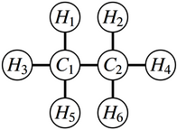
-
You might be tempted to solve this problem by repeatedly taking the city adjacent to the greatest number of uncovered cities and then stock- piling there, repeating until all cities are covered. Surprisingly, this approach will not always work. In the example shown to below here, which we’ve entitled “Don’t be Greedy,” the optimal solution is to stockpile in cities B and F. If, on the other hand, you begin by grabbing city D, which would provide coverage to five of the seven cities, you will need to stockpile in at least two more cities (one of A and B, and one of E and F) to provide coverage to everyone. If you follow the re- cursive strategy outlined above, you won’t need to worry about this, since that solution won’t always grab the city with the greatest number of neighbors first.
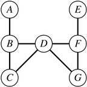
Once you’re sure that your code works, choose the “Disaster Planning” option from the main menu. The bundled demo will let you run your code out on some realistic data sets. It makes multiple calls to your recursive function to find the minimum number of cities needed to provide coverage. Play around with the sample transportation grids provided – find anything interesting?
A note: some of the sample files that we’ve included have a lot of cities in them. The samples whose names start with VeryHard are, unsurprisingly, very hard tests that may require some time for your code to solve. It’s okay if your program takes a long time (say, at most two minutes) to answer queries for those transportation grids, though the other samples shouldn’t take very long to complete.
(Optional) Part Four: Extensions!
As always, if you want to go above and beyond what we're asking for here, we'll award extra credit for your efforts. As usual, if you do submit extensions, please submit two versions of your .cpp files: a base version meeting the requirements set out here, plus a second version that contains the extensions (say, in a file with a name like MatchmakerExtended.cpp or something like that).
You can do whatever you'd like as extensions. Here's some suggestions to help you get started:
-
Matchmaker: In this assignment, you found perfect matchings and maximum-weight matchings. There's a hybrid between the two called a max-cardinality-max-weight matching in which you first prioritize matching as many people as possible, and then, of all the matchings that pair off the maximum number of people, choose the one that has the maximum total weight. Another is the max-cardinality-maximin-matching, in which you first prioritize pairing off as many people as possible, then choose the matching from that group where the weight of the lowest-weight edge in the matching is maximized. Explore implementing these techniques, then run some experiments with them. When would these approaches be preferred over, say, finding a perfect matching or maximum-weight matching? Where would they be less appropriate? And what other strategies for finding "good" matchings can you come up with?
-
Disaster Planning: Are there any other maps worth exploring? Feel free to create and submit a map of your own! You can add a new map file into the
res/directory by creating a file with the.dstsuffix. Use the existing.dstfiles as a reference. We’d love to expand our map collection by adding your creations into future quarters!There are a number of underlying assumptions in this problem. We're assuming that there will only be a disaster in a single city at a time, that the road network won't be disrupted, and that there's only a single class of emergency supplies. What happens if those assumptions are violated? For example, what if there's a major earthquake in the Cascadia Subduction Zone, striking both Portland and Seattle (with some aftereffects in Sacramento) and disrupting I-5 up north? What if you need to stockpile blankets, food, and water separately, and each city can only store one?
You may have noticed that the
VeryHardSouthernUSsample takes a long time to solve, and that’s because while the approach we’ve suggested for solving this problem is much better than literally trying all combinations of cities, it still has room for improvement. See if you can speed things up! Here’s a simple idea to get you started: instead of picking an arbitrary uncovered city at each point in the recursion, what if you pick the uncovered city with the fewest neighbors? Those are the hardest cities to cover, so handling them first can really improve performance.
Submission Instructions
Before you call it done, run through our submit checklist to be sure all your ts are crossed and is are dotted. Make sure your code follows our style guide. Then upload your completed files to Paperless for grading.
Partner Submissions:
- If you forget to list your partner you can resubmit to add one
- Either person can list the other, and the submissions (both past and future) will be combined
- Partners are listed per-assignment
- You can't change/remove a partner on an individual submission
Please submit only the files you edited; for this assignment, these files will be:
DebuggingAnswers.txt(don't forget this one!)ShortAnswers.txt(don't forget this one!)Matchmaker.cppDisasterPlanning.cpp
You don't need to submit any of the other files in the project folder.
If you modified any other files that you modified in the course of coding up your solutions, submit those as well. And that’s it! You’re done!
Good luck, and have fun!